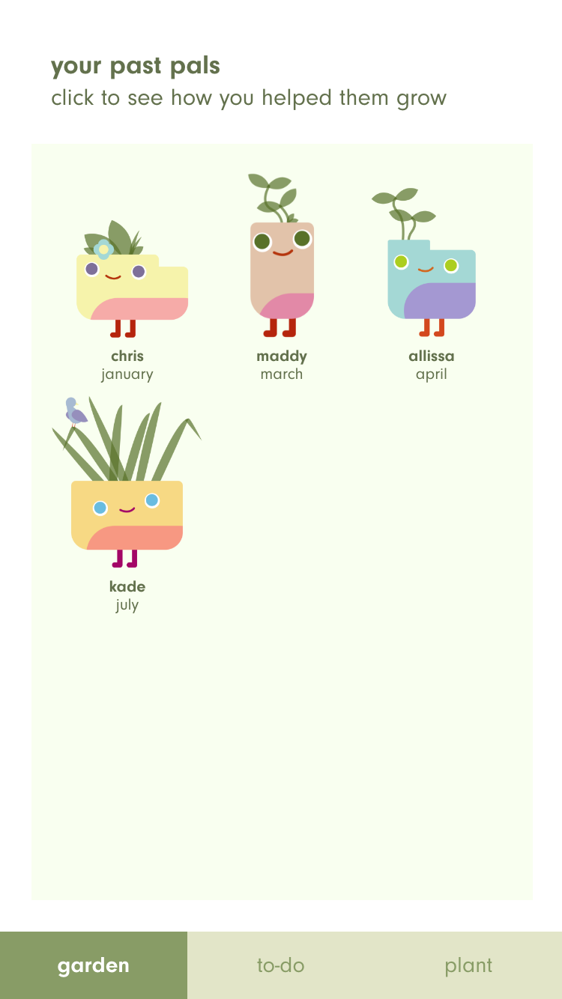
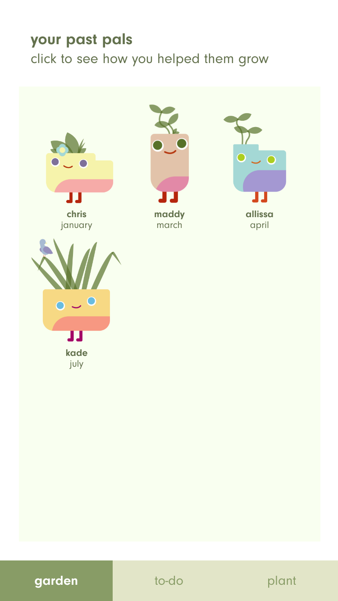

Plant Pals
Promoting Healthy Work-Life Balance
persuasive design
user testing
wireframing
ui/ux design
Team:
Plant Pals is a task management application that utilizes a virtual pet to help promote work and life balance. The application aims to improve user behavior through suggesting breaks to be completed after each task, while providing the user with a new plant pal each month as an extrinsic motivator.
Role:
I participated in user testing, low- and mid-fi prototypes, and visual style, which a focus on the general interactivity of the application.


 

Literature Review
We started off the process by looking at a few different studies and papers with similar material to what we were considering including in our application.
- plenty of virtual pets encouraging healthy habits (eating fruits and veggies, exercising)
- breaks should include non-work and low-stress activities
- day-to-day positive feedback loop via reflection on goals acts as a self-affirmation intervention
Initial User Research
To further our understanding of the space, we sent out a survey asking people about their task tracking habits in terms of whether or not they use an outside resource, what they find important in terms of features, and how effective they find their current method. These were the main insights we found from our survey:
- people who utilize applications for task management purposes
- many people were unsatisfied with their current task management applications, but could not find a substitute
- most users took quite frequent unintentional breaks, especially in relation to social media
- people who did plan breaks had them dependent on completing major goals/checkpoints
Paper Prototyping
After our initial research, we decided we had enough information to start creating some paper prototypes that would allow us to user test as well as visualize our idea.

Low-Fi Prototyping
After getting basic feedback from a few of our peers, we worked on integrated all of the aspects of our task adding features more hammered down to test more concretely. We worked on low-fi screens for the plant, the to-do list, as well as the garden area of the application.


User Testing
We asked a couple of our classmates and peers to walkthrough how they would go from screen to screen and what features they appreciated in our low-fi mockups.
We found that users liked the ease of adding tasks as well as the options to add date/time information and categorize. Additionally, users preferred having the application suggest specific breaks rather than time-based breaks, which went hand-in-hand with our literature review findings.
Highlights
- “I would first click on add new task and presumably a scroll function would allow me to choose the date and time in which I would need to complete it”
- “might be better to have plant grow based on commitment to completing tasks and breaks rather than have it based on how many are completed”
- thought it would be nice if instead of having one plant grow infinitely to have new plants after completing a lot of having new plants on a weekly/monthly schedule
Style Explorations
We decided to go with a vector-based illustration style as it would allow us to quickly iterate and animate different assets such as the virtual pets as well as items. We started testing different color palettes and typographic styles that we could implement in further screen refinements.

Mid-Fi Prototyping
To more accurately user test, we decided to flesh out the visual style for the screens. As users in our previous testing sessions noted that they enjoyed the minimalistic style of the low-fi digital prototypes, we decided to stay true to that sort of approach.
We used a light muted green color and kept a white background to make sure that the plant would stand out, regardless of the colors. We wanted to try to simulate how the application would work in terms of completing tasks/breaks and how the user would be rewarded for these accomplishments.


Interaction Prototyping
We worked on creating a final interactive demo that touched on the concerns of our peers. Previous pain points seemed to revolve around the order of some of the screens during the interaction, the size of elements on the page, and further development of sections to avoid confusion.
Finally, our team unified the overall visual design and interactions as well as simulated a sensical user flow for a public demo based on how our user testing participants went through the application.
Reflection
One of the biggest takeaways I found through this project was the process of extracting salient points from user testing sessions. This project gave me further evidence for the effectiveness of proper user testing (especially with consistent participants) and how it impacts design decisions.
As for next steps, our team is definitely interested in furthering the connection between breaks and tasks through researching and surveying specific activities while gaining a better understanding of how extrinsic motivators can help to bolster existing internal ones.